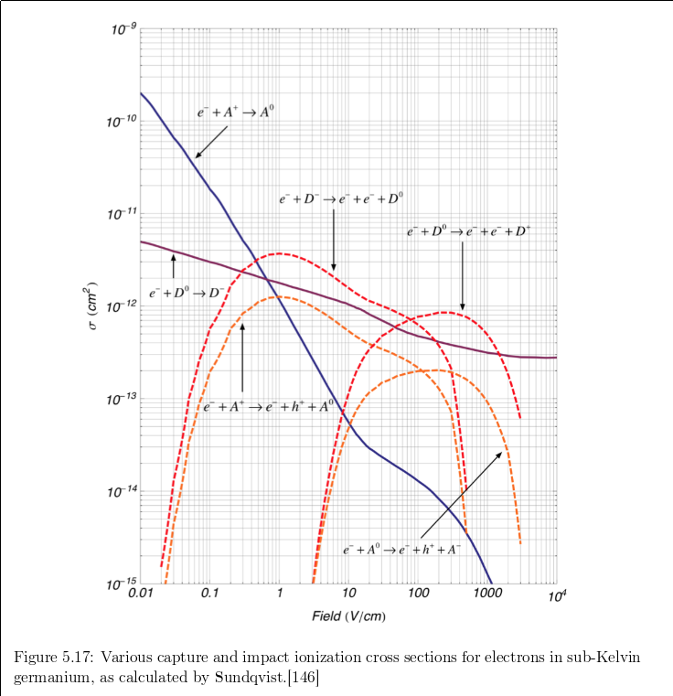
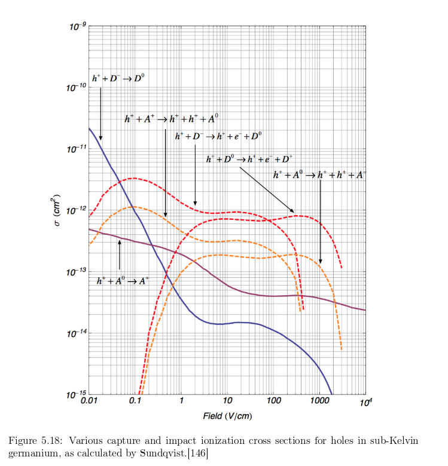

This note presents a possible physical mechanism for the observed 60keV peak time dependence in Run67.
We have made the following observations of the 60keV peak time dependence:
The loss of both types of signal is easily explained as the loss of charge collection efficiency due to the breakdown of bulk filed from trapped charges. The linear increase of hole impact ionization signal and lack of electron II, lead us to propose the following theory. The population of possible hole impact ionization sites starts small and is created by drifting electrons which are captured. This would qualitatively explain the increase with event rate and the linearity. The proposed physical mechanism is the combination of the following two processes.
Electron capture on neutral donors is the dominant electron capture mechanism in subkelvin Ge at bias fields of 1-10 V/cm. It has cross section \( \sigma \sim 1.5 \times 10^{-12} cm^2 \) under those conditions. The hole impact ionization of overcharged donors is also the dominant hole impact ionization process in Ge under such conditions, with a cross section of \( \sigma \sim 1.0 \times 10^{-12} cm^2 \). The theoretical bias dependence of these and other processes are shown in Figures 1 and 2 below [1].
| Figure 1: Electron processes in sub-K Ge | |
|---|---|
|  | |
| Figure 2: Hole processes in sub-K Ge | |
|---|---|
|  | |
{kind=link}
{kind=link}